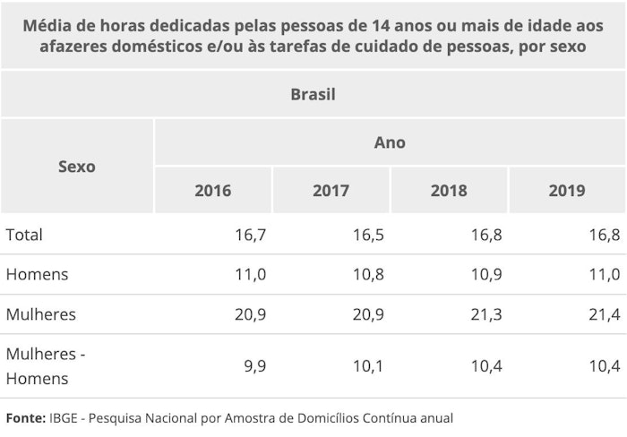
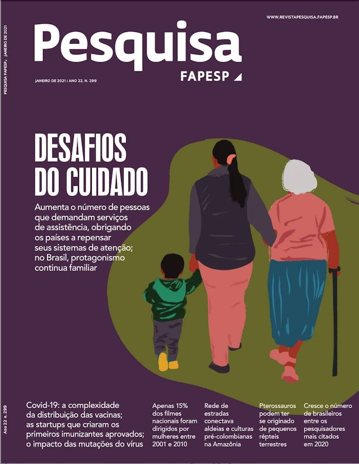

A partir da leitura dos textos motivadores e com base nos conhecimentos construídos
ao longo de sua formação, redija um texto dissertativo-argumentativo em modalidade escrita formal da
língua portuguesa sobre o tema "Desafios para o enfrentamento da invisibilidade do trabalho
de
cuidado
realizado pela mulher no Brasil", apresentando proposta de intervenção que respeite os direitos
humanos.
Selecione, organize e relacione, de forma coerente e coesa, argumentos e fatos para defesa de seu ponto
de vista. Não se esqueça: seu texto deve ter mais de 7 (sete) linhas e, no máximo, 30 (trinta)
linhas.
TEXTO I:
O trabalho de cuidado não remunerado e mal pago e a crise global da desigualdade
O trabalho de cuidado é essencial para nossas sociedades e para a economia. Ele inclui o trabalho de
cuidar de crianças, idosos e
pessoas com doenças e deficiências físicas e mentais, bem como o
trabalho doméstico diário que inclui cozinhar, limpar, lavar, consertar
coisas e buscar água e
lenha. Se ninguém investisse tempo, esforços e recursos nessas tarefas diárias essenciais,
comunidades, locais de trabalho e economias inteiras ficariam estagnados. Em todo o mundo, o
trabalho de cuidado não remunerado e mal pago é desproporcionalmente assumido por mulheres e meninas
em situação de pobreza, especialmente por aquelas que pertencem a grupos que, além da discriminação
de gênero, sofrem preconceito em decorrência de sua raça, etnia, nacionalidade e sexualidade. As
mulheres são responsáveis por mais de três quartos do cuidado não remunerado e compõem dois terços
da força de trabalho envolvida em atividades de cuidado remuneradas.
Disponível em:
https://www.oxfam.org.br/publicacao/tempo-de-cuidar-o-trabalho-de-cuidado-nao-remunerado-e-mal-pago-e-a-crise-global-da-
desigualdade/
(adaptado).
TEXTO II:

TEXTO III:
A sociedade brasileira tem passado por inúmeras transformações sociais ao longo das últimas décadas. Entre
elas, as percepções sociais a respeito dos valores e das convenções de gênero e a forma como mulheres têm se
inserido na sociedade. Algumas permanências, porém, chamam a atenção, como a delegação quase que exclusiva
às famílias - e, nestas, às mulheres - de atividades relacionadas à reprodução da vida e da sociedade,
usualmente nominadas trabalho de cuidado.
Disponível em: https://repositorio.ipea.gov.br/handle/11058/7412 (adaptado).
TEXTO IV:

Disponível em: https://issuu.com/pesquisafapesp/docs/pesquisa_299